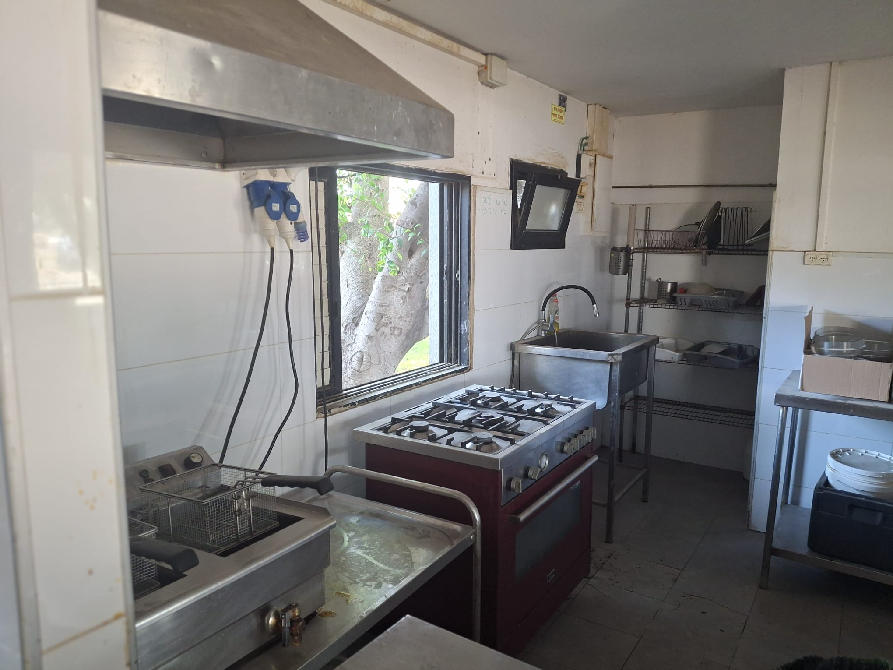
תנור וצ׳יפסר כפול וגם כיור
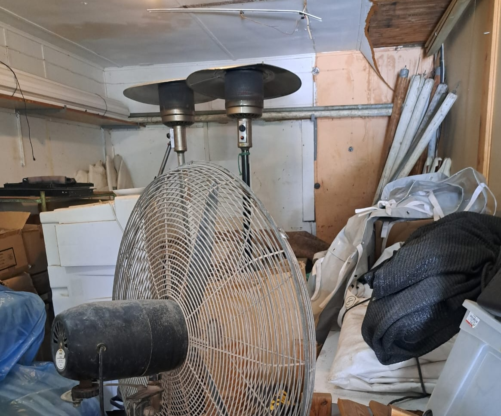
פטריות חימום על גז
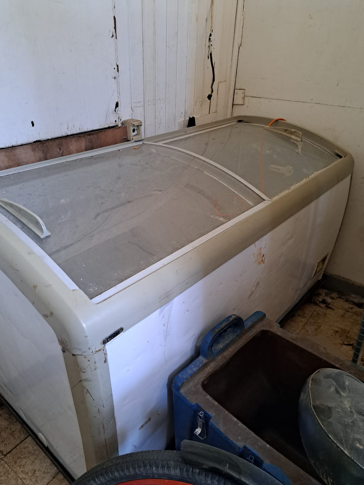
מקפיא מפלצת

שירותים עם כניסה נפרדת
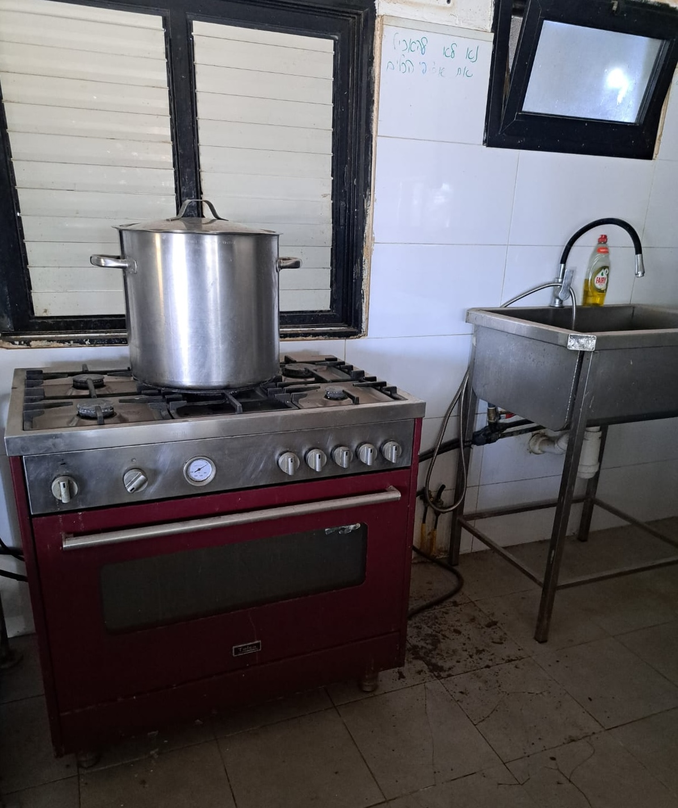
תנור תעשייתי וסיר נירוסטה מיקצועי
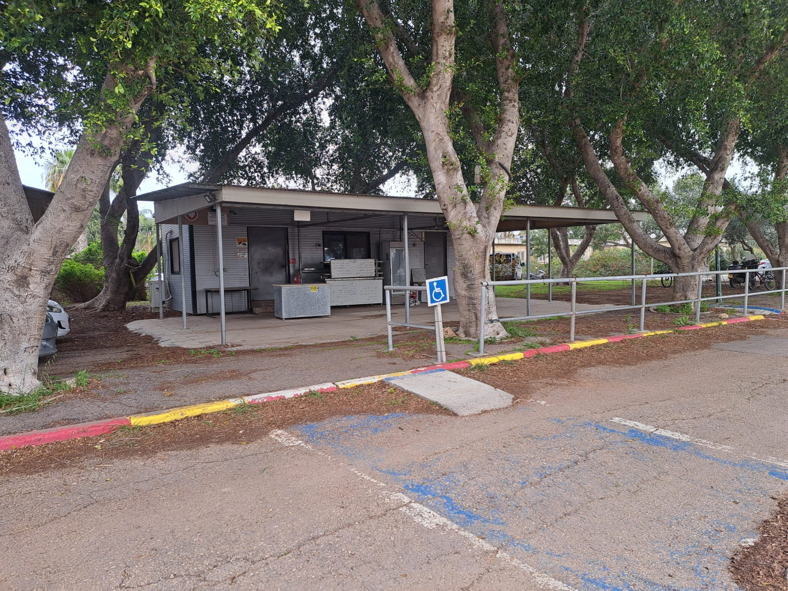
מבט מקדימה
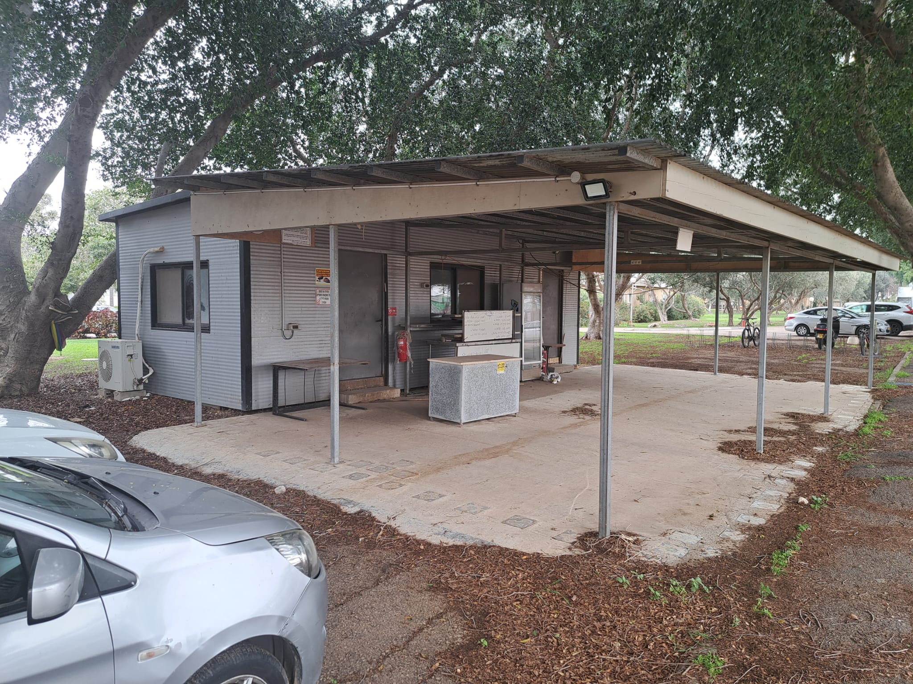
מבט מהצד
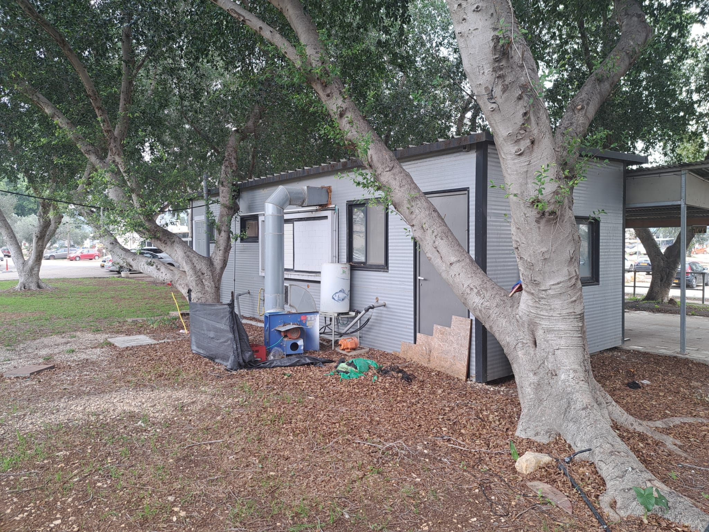
מבט מאחורנית
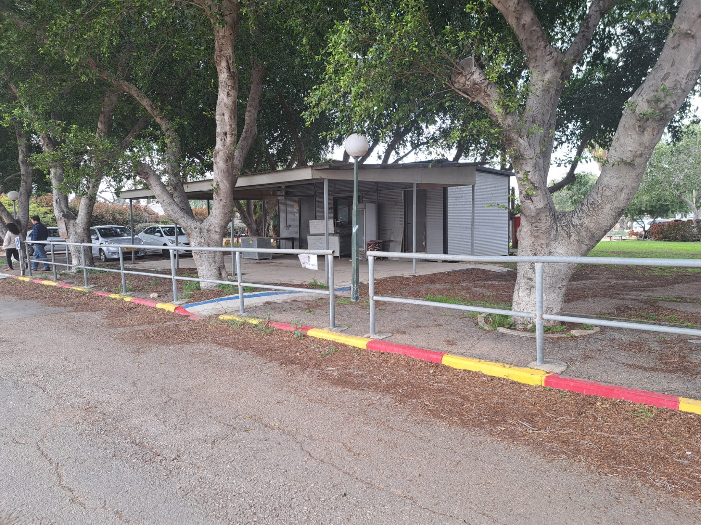
מבט מהצד השני
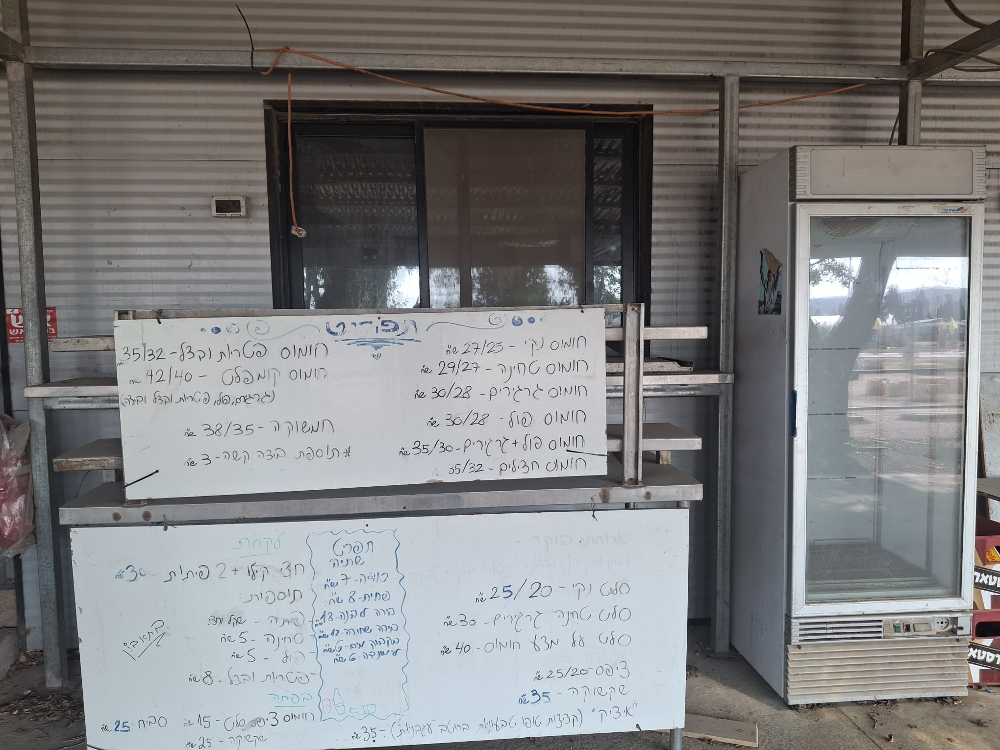
תקריב מהקדימה
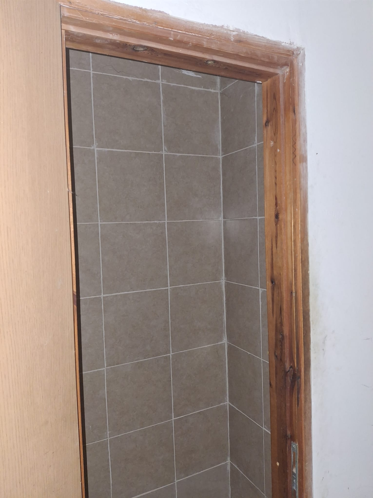
מקלחת עם אריחי קרמיקה בצבע חול מדברי

מחסן קטן לשמירת חפצים גדולים
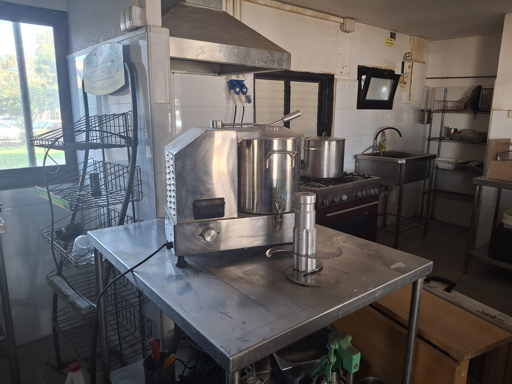
מכונת קיצוץ וטחינה של ירקות ופירות תעשייתית מאיטליה שחבל על הזמן
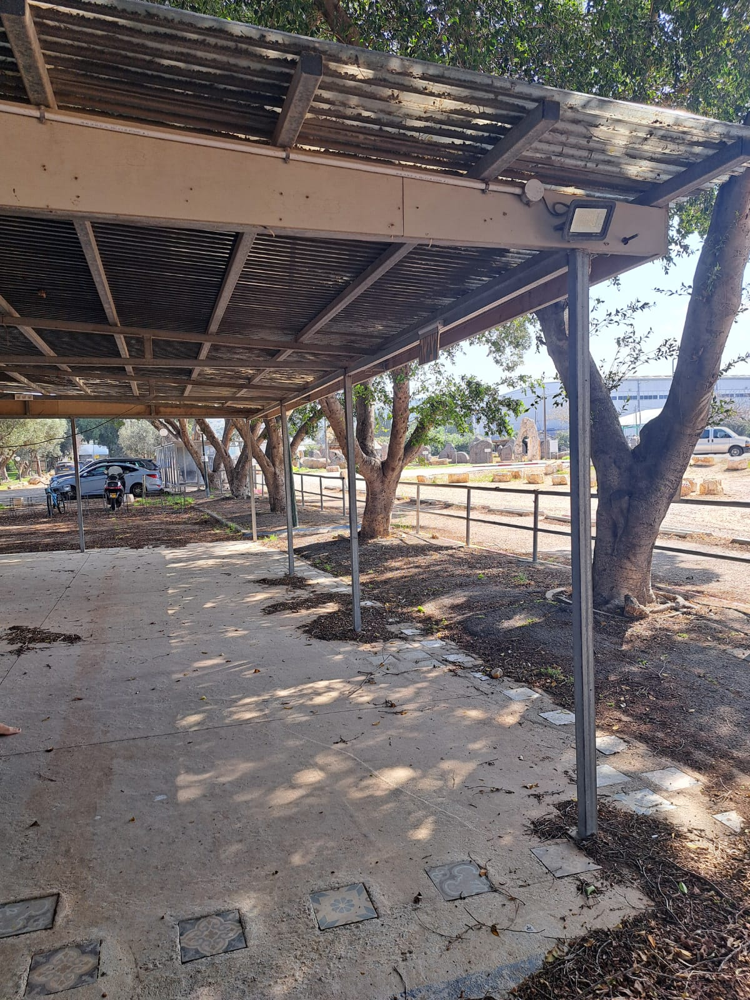
סככה ענקית מפנקת טובה כנגד גשם ושמש
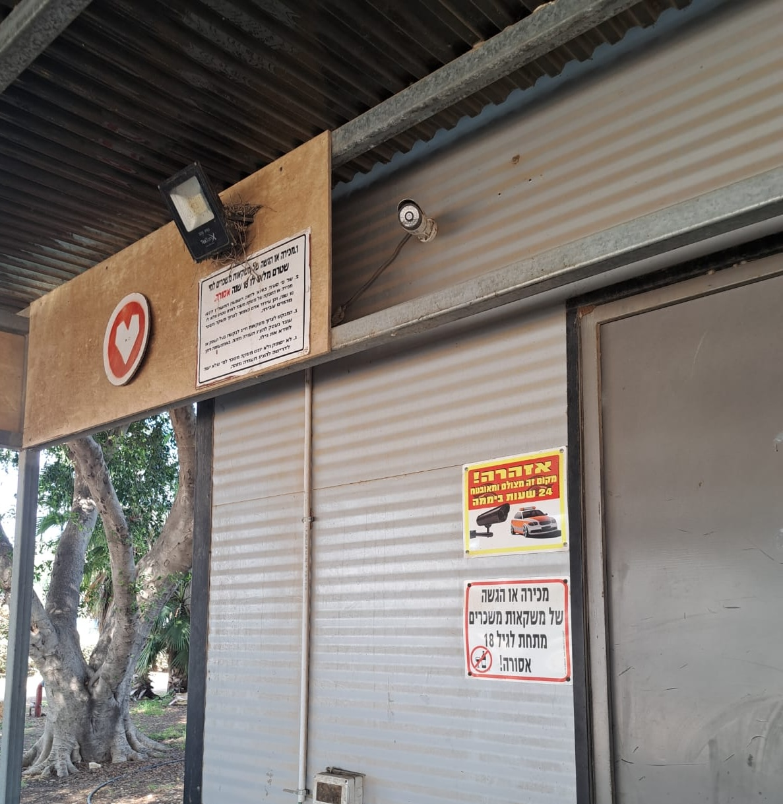
מצלמות אבטחה ופנסי לד